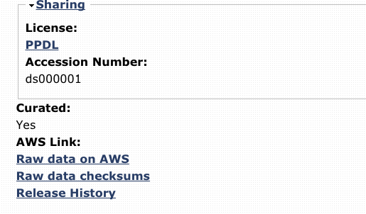

Notes on the Open FMRI data sets¶
Here are some notes on the OpenFMRI data sets
Prefer curated datasets¶
Not all of the data sets are suitable for your projects.
When you click on a link a dataset, check at the bottom of the page of the page whether the dataset is “Curated”:
If “Curated” is No, it’s unlikely that the data will be usable, and it often isn’t available. You are welcome to try using the “Curated=No” datasets when they are available, but bear in mind that you will have to do careful checks to make sure the data is usable for analysis. For example, you will need to make sure you have all the stimulus files you need to know when the subject was doing the task, during the FMRI scans.
We are only expecting you to analyze the FMRI data, possibly with the anatomical data. There are various datasets with other modalities of data such as EEG (Electroencephalography - brain electrical activity recorded on the scalp). We aren’t expecting you to analyze these other modalities, but you can still analyze the FMRI parts of these multimodal datasets.
The multi-modal data set ds0117 does have FMRI data available, as well as the other modalities, but you should look at their Nature data paper for details of the study (not linked from the OpenFMRI page).
Some terms¶
An “event-related” design is a design where the subject sees stimuli or does a task that lasts only a few seconds at a time. The events are often presented at random intervals.
A “block-related” design is when the subjects see stimuli or do a task for a longer period, usually around 30 seconds. Block designs tend to have simpler tasks, but generate higher brain signal due to the task.